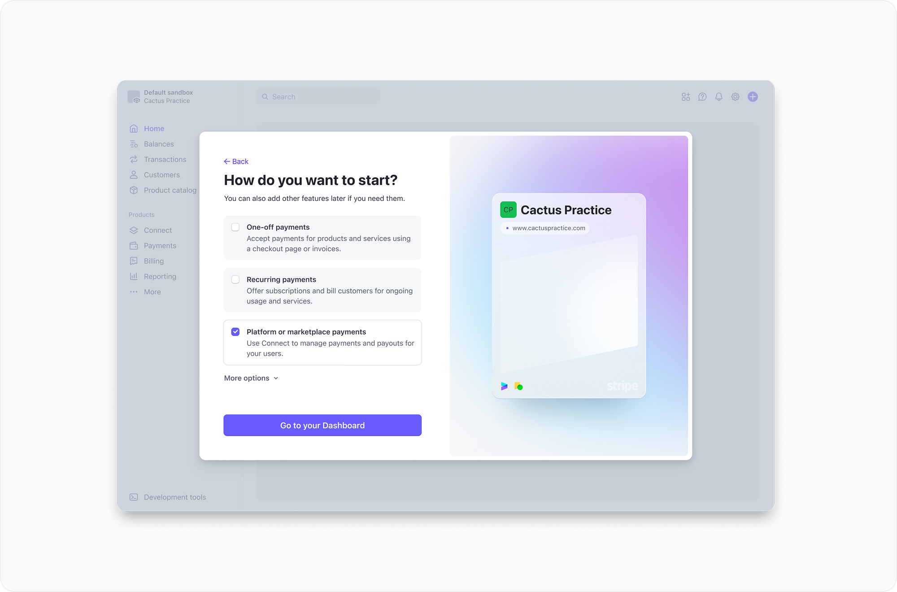
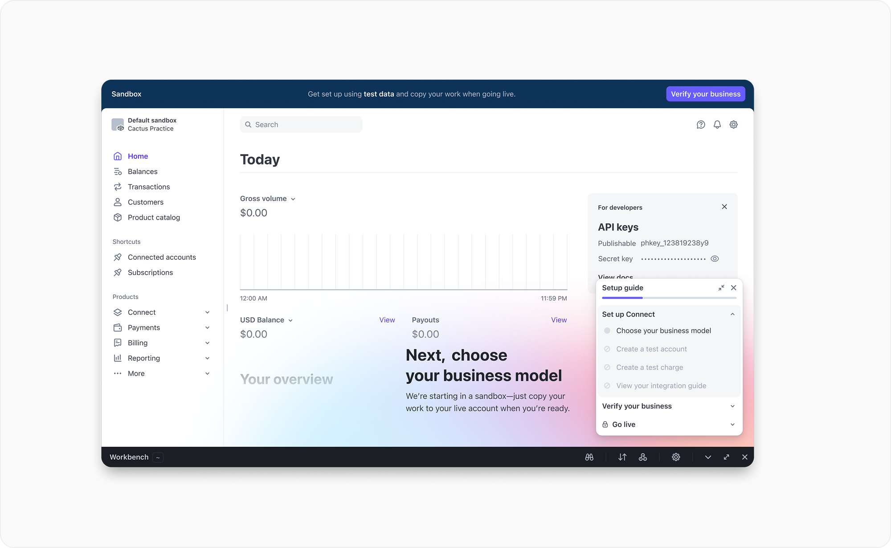
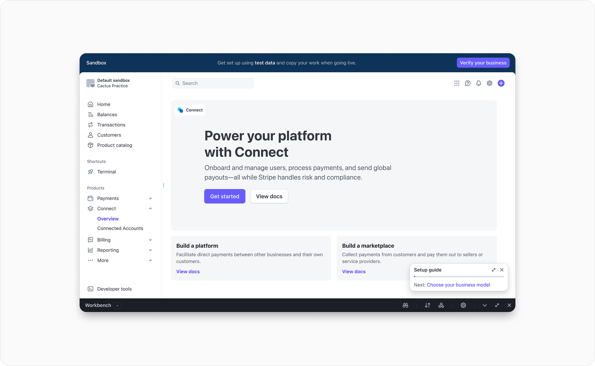
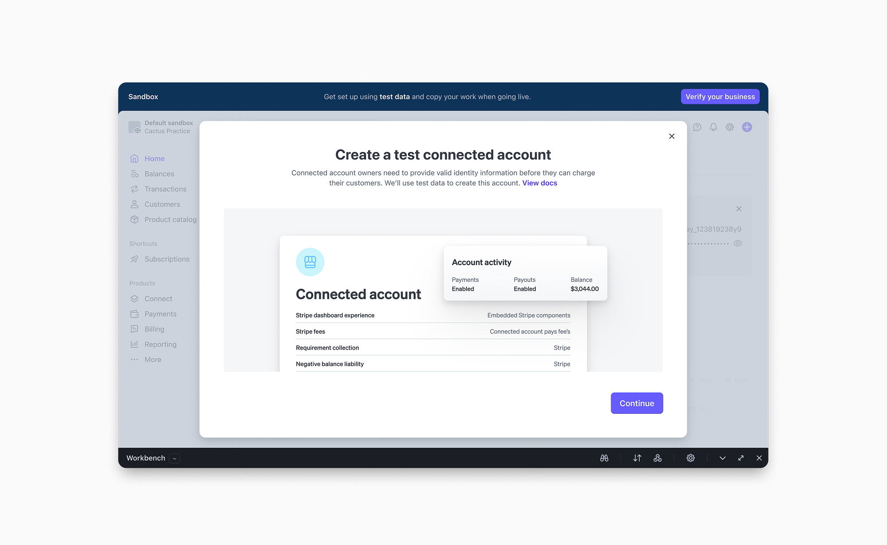

Two major iterations of the sign-up activation flow over one year drove a ~60% increase in conversion and a 16% lift in go-lives.
Stripe's edge in the platform and marketplace space was built on self-serve onboarding — no sales calls, no friction, just a fast path from sign-up to live. Strong developer documentation and a perceived reduction in complexity meant startups could move quickly, and that speed became a meaningful competitive differentiator.
I joined the first iteration mid-stream and saw the team was maxing out a direction that wasn't going to work. The second iteration was a reset: I partnered with a senior staff designer and led the Connect side end-to-end. Result: ~60% conversion lift, 16% lift in self-serve go-lives.



